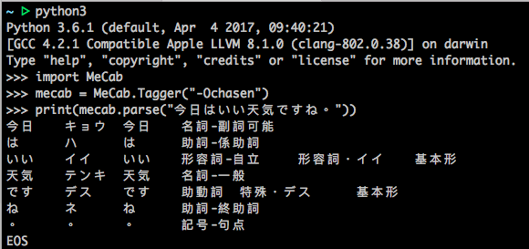

因為上一篇拿到T-SQL的腳本，資料內容是日文，所以本篇在說明安裝套件會遇到的小問題。
什麼是MeCab
mecab是奈良先端科學技術大學院的工藤拓開發的日文分詞系統，該作者寫過多個machine learning 方面的軟體套件，最有名的就是CRF++， 目前該作者在google@Japan 工作。 mecab 是基於CRF 的一個日文分詞系統，代碼使用c++ 實現，基本上內嵌了CRF++ 的代碼，同時提供了多種腳本語言調用的接口(python, perl， ruby 等)。整個系統的架構採用通用泛化的設計，用戶可以通過配置文件定制CRF訓練中需要使用的特徵模板。甚至，如果你有中文的分詞語料作為訓練語料，可以在該架構下按照其配置文件的規範定制一個中文的分詞系統。
關於 MeCab (和布蕪)
Mecab 是京都大學情報學研究科-日本電信電話股份有限公司通信科學基礎研究所通過 Unit Project 的合作研究共同開發的詞法分析引擎。其設計的基本方針是不依賴於具體的語言，詞典，語料庫， 採用 Conditional Random Fields (CRF) 模型進行參數估計, 性能優於使用隱馬模型的 ChaSen 。同時， 平均解析速度高於 ChaSen, Juman, KAKASI 這些日文詞法分析器. 順便說一下， Mecab (和布蕪, めかぶ), 是作者最喜歡的食物. (參考:MeCab 简介)
安裝 MeCab
前置環境
- macOS Sierra
安裝 MeCab
- 首先先下載Source(mecab-0.996.tar.gz)
再來開啟 Terminal ，先創建一個資料夾
$ sudo mkdir /usr/local/mecab解壓縮、設置、編譯、安裝
$ cd $HOME/Downloads$ tar xvfz mecab-0.996.tar.gz$ cd mecab-0.996$ ./configure --enable-utf8-only --prefix=/usr/local/mecab$ make$ sudo make install
安裝 IPA 辭典
IPA 辭典, 基於 IPA 語料庫, 使用 CRF 進行參數估計的詞典(必安裝)
- 首先先下載Source(mecab-ipadic-2.7.0-20070801.tar.gz)
- 解壓縮、設置、編譯、安裝
$ cd $HOME/Downloads$ tar xvfz mecab-ipadic-2.7.0-20070801.tar.gz$ cd mecab-ipadic-2.7.0-20070801$ ./configure --prefix=/usr/local/mecab --with-mecab-config=/usr/local/mecab/bin/mecab-config --with-charset=utf8$ make$ sudo make install
環境設定
加入 MeCab 的路徑
$ vi $HOME/.profile修改 .profile
==省略export PATH=/usr/local/mecab/bin:$PATH==省略再進去 .profile 確認是否有修改正確
測試 MeCab 是否安裝成功
在 Terminal 輸入 mecab，成功如下圖。
以下是我的錯誤訊息，如果有跟我相同的訊息，可以嘗試下面方法:
$ mecab --dump-config
param.cpp(69) [ifs] no such file or directory: /usr/local/lib/mecab/dic/ipadic/dicrc爬了許多文章，但是因為這個軟體套件是來自日本，所以大部分的有關的都是日文，在這邊找了許多篇，一邊依靠 google 大神，一邊搜尋，最後終於在一個論壇找到跟我一樣的問題。
解決 MeCab 錯誤訊息
首先我們先確認資料夾內容，這邊沒有 ipadic
$ ls /usr/local/lib/mecab/dic/naist-jdic那我們必須開啟 /usr/local/etc/mecabrc，如下圖 這邊我們要去修改
dicdir = /usr/local/lib/mecab/dic/ipadic為dicdir = /usr/local/lib/mecab/dic/naist-jdic保存後，在試著輸入 mecab。(成功！)
安裝 python 的套件
pip 安裝
$ pip install mecab-python3測試是否成功，以下分別測試 python2 與 python3 